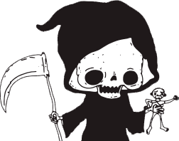

✝
Con eso no se jode.
presenta
MORBOPOLY
El juego de tu vida de mierda.
El objeivo del juego es lograr una vida lo más miserable (es decir, parecida a su vida real-posible). Para eso deben atravesar todo el tablero recolectando Cupones de Angustia, Enfermedad, Tragedia, etc.
Antes de empezar, todos los jugadores toman un cupón de cada tipo y una pieza de Infeliz que es la que los representará durante el juego. Luego, cada participante tira un dado y avanza esa cantidad de casilleros.
Cada casillero tiene instrucciones claras para que hasta ustedes puedan comprenderlas.